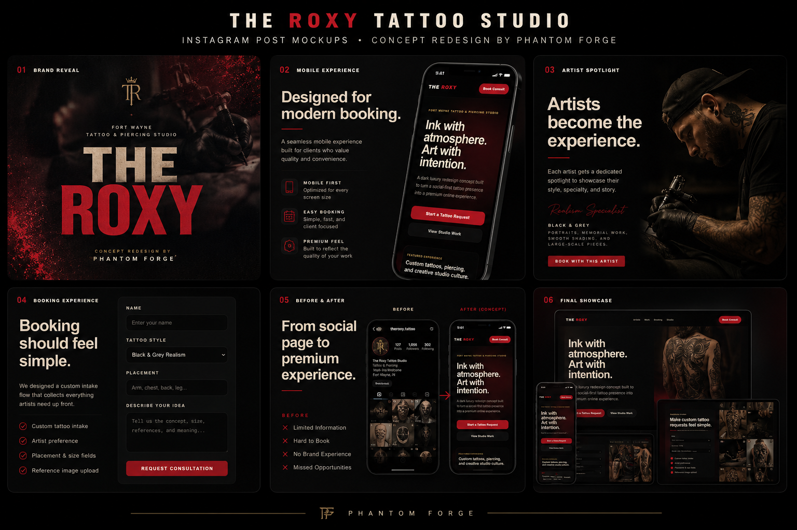

FEATURED FILE · CONCEPT REDESIGN
Roxy Tattoo Studio
A cinematic tattoo studio concept built around atmosphere, artist identity, and a premium booking flow. Designed to turn a social-first brand into a polished digital experience.

BEFORE / AFTER
From Social Presence To Digital Experience
Each concept is built to show how a business can move from scattered online presence into a cleaner, more premium customer journey.
Before
Limited Online Presence
Most brands start with social media, basic contact details, and no clear booking path. The experience can feel unfinished even when the work is strong.
After
Premium Digital System
Phantom Forge® concepts turn the brand into a structured digital experience with clearer visuals, stronger trust, and a smoother path to action.
PROJECT ARCHIVE
Concept Studies
A growing collection of mockups, redesign studies, brand systems, client concepts, and digital experiences forged by Phantom Forge®.
NEXT FILE
New Client Concepts Will Appear Here
Future client work, before-and-after redesigns, and newest mockups can be added to this archive as Phantom Forge® grows.